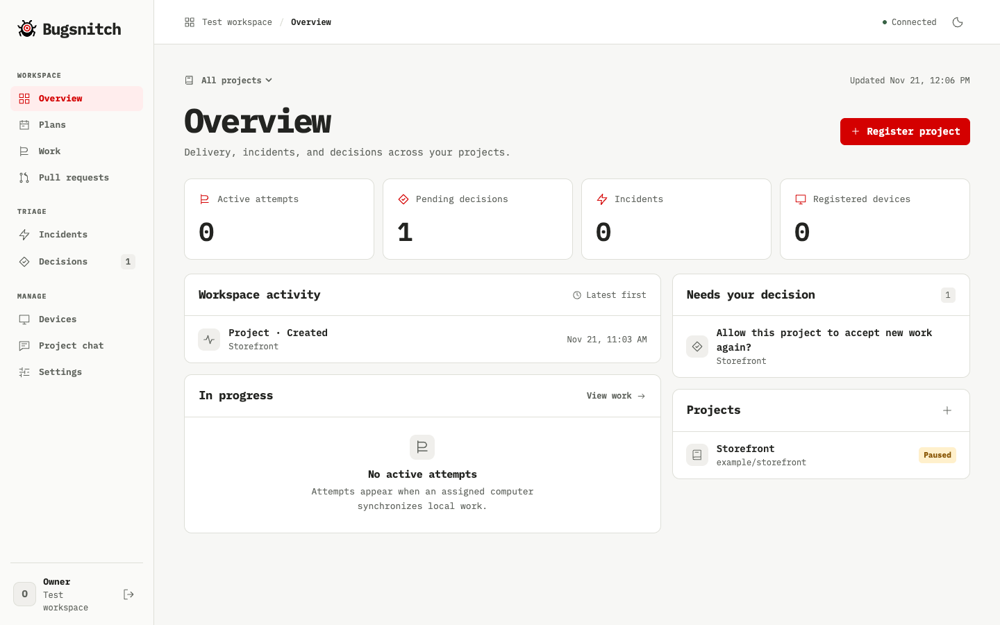

Developer preview
Know the bug is fixed.
Take a bug from report to verified fix. Approve the work, run the repair on your Mac, and check the build you actually shipped.

The workflow
From first report to
the build you shipped.
-
Triage
Decide what to fix.
Capture what happened and what should have happened. Link the incident to a GitHub issue with criteria you can check.
-
Repair
Review work on your Mac.
The runner works in a separate Git worktree, runs your validation command, and records an independent review of the candidate.
-
Verify
Check the deployed build.
Attach evidence to the exact deployment. A redeploy needs a fresh check, and a recurrence returns the incident to triage.
Run it locally
Try a complete repair.
The bundled demo reproduces a checkout bug in Chromium, applies a scripted repair, then checks the served build from the browser. The exercise runs with local fixtures.
Read the setup guidemake checkout-acceptanceHosted access is invite-only during the pilot.